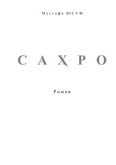

SBir yigitning sahro kabi hayotdagi ruhiy va ma'naviy izlanish romani.
"Sahro" — Mustafo Yusuf qalamiga mansub roman bo'lib, bosh qahramon o'z hayotidagi azob-uqubatlar, muhabbat va ma'naviy izlanishlarini hikoya qiladi. Asar insonning o'z-o'zini anglash, gunoh va tavba yo'lidagi ruhiy safarini tasvirlaydi. Roman falsafiy muqaddima va Qur'on oyatlari bilan bezatilgan chuqur ma'naviy mazmun kasb etadi.